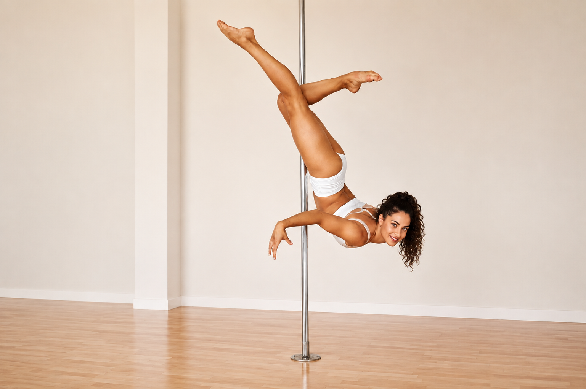

Forza · Eleganza · Espressione
Pole Dance.
Una disciplina completa che fonde forza, tecnica e creatività, trasformando ogni figura in espressione personale.
Scoprire nuove possibilità
Forza che diventa eleganza.
La Pole Dance unisce preparazione atletica, elementi acrobatici e movimento espressivo. Le figure vengono apprese attraverso progressioni che sviluppano forza, presa, mobilità e sicurezza.
Ogni traguardo racconta un percorso personale: la tecnica cresce insieme alla fiducia, alla creatività e alla capacità di esprimersi.
Scegli il tuo stile
Quattro corsi, infinite possibilità.
Scopri la proposta più adatta a te e apri la card per conoscere il corso.
Un percorso completo
I benefici della Pole Dance.
Forza
Coinvolge braccia, spalle, core e gambe.
Flessibilità
Migliora mobilità ed estensione in modo progressivo.
Coordinazione
Sviluppa controllo e consapevolezza corporea.
Autostima
Valorizza i progressi e la fiducia personale.
Creatività
Permette di comunicare attraverso il movimento.
Determinazione
Insegna pazienza, costanza e coraggio.
Allenati a San Stino
La sede Pole Dance.
San Stino di Livenza
Via Gallo 12, 30029 Corbolone (VE)Apri in Google Maps →Esprimi la tua forza
Vieni a provare Pole Dance.
Conosci la disciplina e scopri fin dove puoi arrivare.